The Single Room Strategy: A Focused Prototype
You might wonder why this entire architectural experience is contained within a single room. The answer comes down to scope management and the need for rapid prototyping. My primary goal was to get a fully functional, highly polished vertical slice ready to showcase as quickly as possible. By restricting the environment to just the living and dining area, I could focus all my development time on refining the core mechanics, such as the dynamic time of day, the VR physical interactions, and the Blueprint automation. A smaller footprint meant less time spent on layout design and asset placement, and more time perfecting the actual XR user experience to prove the core concept works flawlessly.

Phase 1: VR Architecture
Building an immersive XR space requires more than just dropping assets into a scene. For this architectural walkthrough, I needed the environment to feel grounded, tactile, and highly optimized for a seamless virtual reality experience. Here is a look at how I brought the living room to life using FAB, customized colliders, and dynamic lighting.
Phase 1.1 Importing 3D Models
To populate the space efficiently, I utilized FAB to bring in high quality 3D models. The living and dining areas are filled with detailed assets ranging from the woven textures on the chairs to the foliage and ceiling fixtures. FAB allowed me to quickly iterate on the interior design directly within Unreal Engine, providing a robust library of realistic meshes that perfectly fit the modern aesthetic I was aiming for.
Phase 1.2 Giving Holograms Physical Mass
A major challenge in VR development is ensuring objects have actual physical presence. Out of the box, many imported visual meshes act like holograms. Early in development, my raycast laser pointers were passing straight through couches and light fixtures.
To fix this and make the smart home interactions work perfectly, I had to rebuild the physical boundaries.
- The Process: I opened the base models in the Static Mesh Editor and overhauled their collision profiles.
- Precision: For interactable elements like the couch cushions and the ceiling fan body, I changed the Collision Complexity to Use Complex Collision as Simple.
- The Result: This wrapped a perfect physical barrier around every curve of the fabric and metal. The VR laser now stops precisely where it touches the material, allowing for flawless material swapping and light toggling.
Phase 1.3 Sculpting the Light
Lighting is what truly sells the realism of space.
- Dynamic Sun: I implemented a dynamic Directional Light linked to a Sky Atmosphere. This allows the user to manually rotate the sun and change the time of day, instantly shifting the mood of the room.
- Interior Fixtures: To set up the artificial lighting, I placed standard Spot Light components inside all of the physical FAB ceiling fixtures.
- VR Optimization: Virtual reality demands high frame rates, so I had to be strategic with my render settings. I disabled heavy hardware ray tracing and instead relied on Screen Space Reflections and optimized volumetric fog settings. This achieved the photorealistic interior lighting you see in the capture while keeping performance well within strict PCVR targets.
Phase 2: VR Base Setup
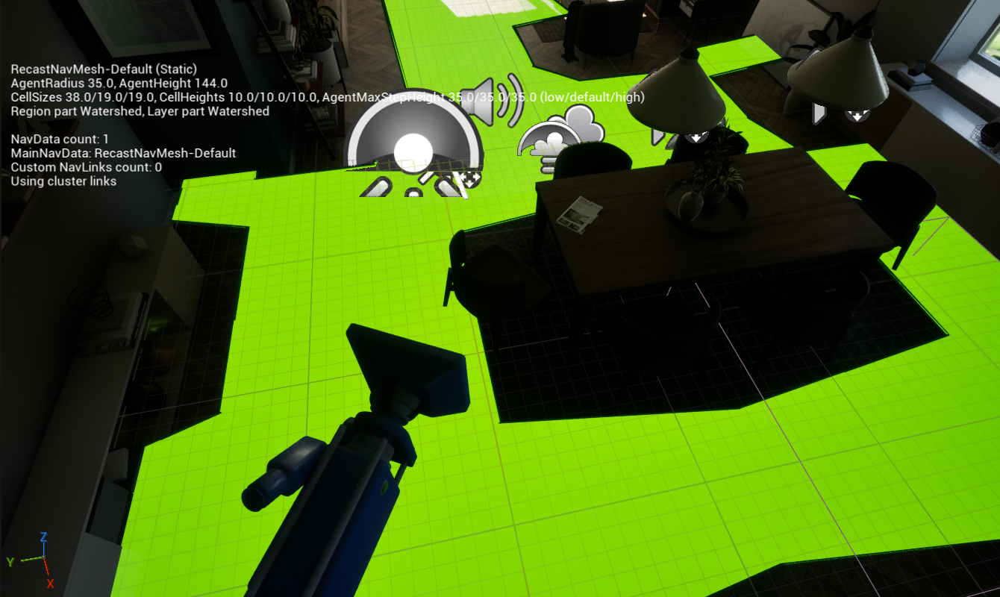
To get the locomotion up and running quickly, I started by integrating the default VR Template in Unreal Engine. It provides a fantastic out of the box foundation for OpenXR development, but it required some immediate modifications to work with my specific architectural space.
- NavMesh bounds and Teleportation: The default VR teleportation system relies entirely on navigation meshes. I dropped a NavMeshBoundsVolume into the level and scaled it to encompass the floor plan. I then tweaked the generation settings, specifically adjusting the agent radius and step height. This ensures the bright green walkable area tightly hugs the physical FAB furniture. Doing this prevents the player from accidentally teleporting into the center of the dining table or getting stuck inside a couch.
- PCVR Optimization: Since this is targeted for PCVR desktop platforms, the base template needed some under the hood tweaking. I adjusted the tracking origin settings to properly support a seated experience. I also went through the project settings to strip out any unnecessary overhead from the template that would impact frame pacing, ensuring the base VR locomotion feels incredibly smooth and responsive before layering on any complex interactions.
Phase 3: Setting up Event Interaction
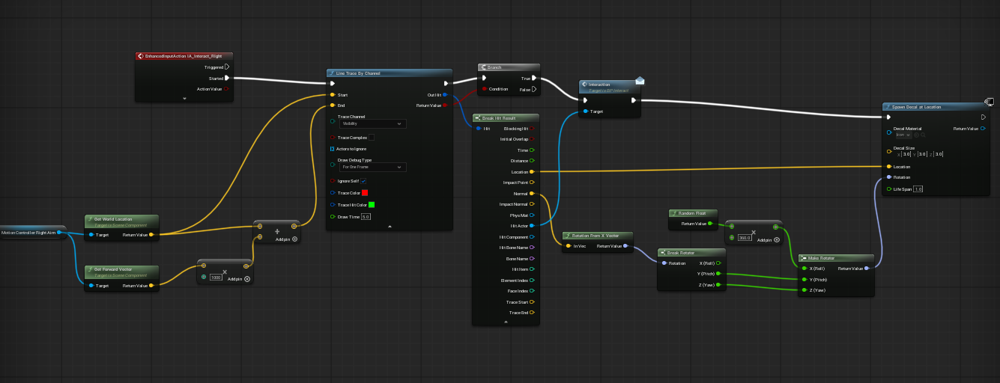
To make the architectural space truly interactive, I needed a robust system that lets the player point and click on various objects without tightly coupling the player pawn to every single furniture blueprint.
Phase 3.1: The Blueprint Interface
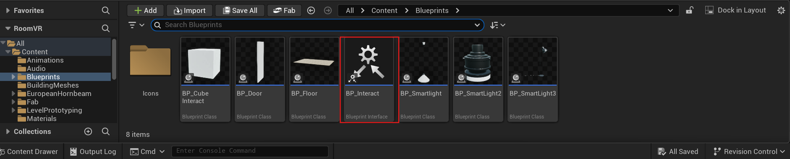
Instead of casting to specific classes, I created a Blueprint Interface named BP_Interact. This acts as a universal communication contract. Any actor in the world can implement this interface. When the player clicks, the pawn simply sends a generic interaction message. The object itself then decides what to do with that information, whether that means toggling a spotlight or swapping a fabric material.
Phase 3.2: Casting the Pointer Ray
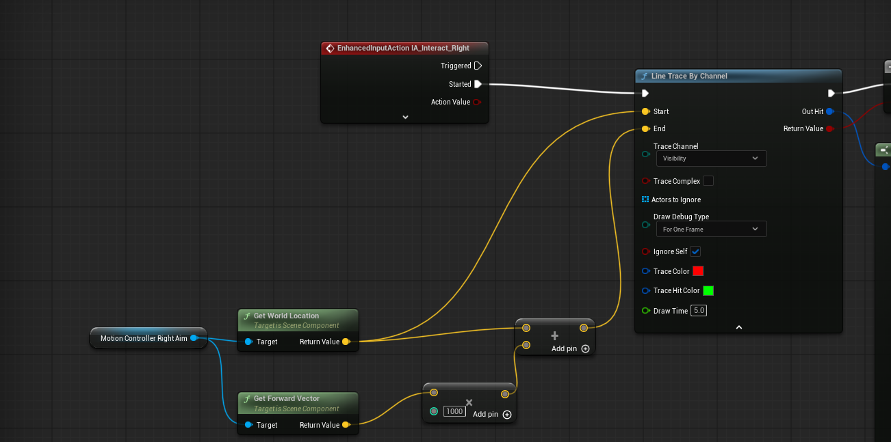
Next, I set up the actual raycast logic inside the player pawn.
- The Trigger: I utilized the Enhanced Input System, hooking up an IA_Interact_Right action to fire when the user pulls the controller trigger.
- The Math: This action triggers a Line Trace By Channel. To calculate the laser trajectory, I grab the world location of the MotionControllerRightAim component to serve as the start point. For the end point, I take the forward vector of that same controller, multiply it by 1000 units, and add it to the start location. This creates a precise invisible line shooting directly out of the player hand.
3.3: Processing the Hit
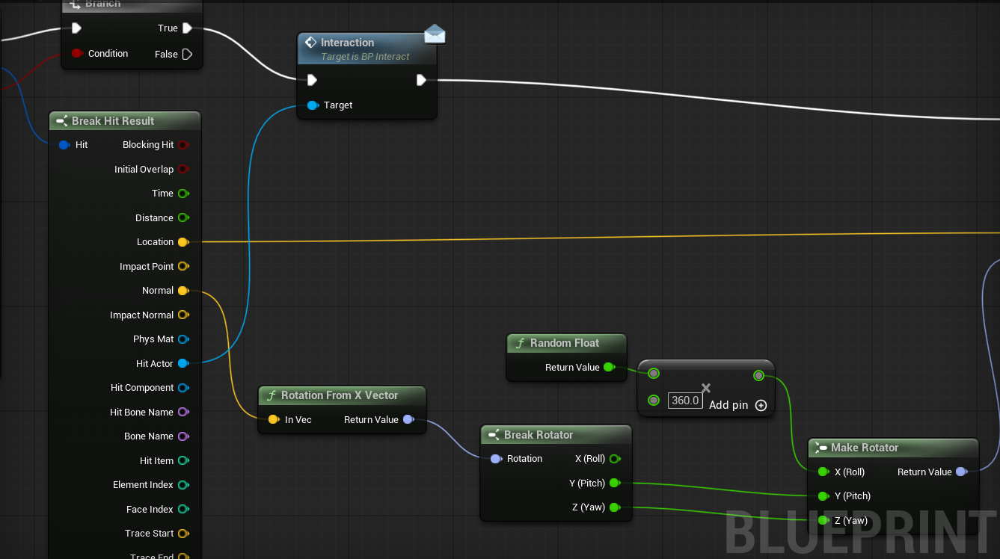
- The Check: The Line Trace outputs a boolean return value. I run this through a Branch node to ensure the trace actually collided with a physical object.
- The Execution: If the hit is successful, I break the hit result to extract the specific Hit Actor. I then fire off the Interface message directly to that actor.
Phase 3.4: Visual Hit Feedback
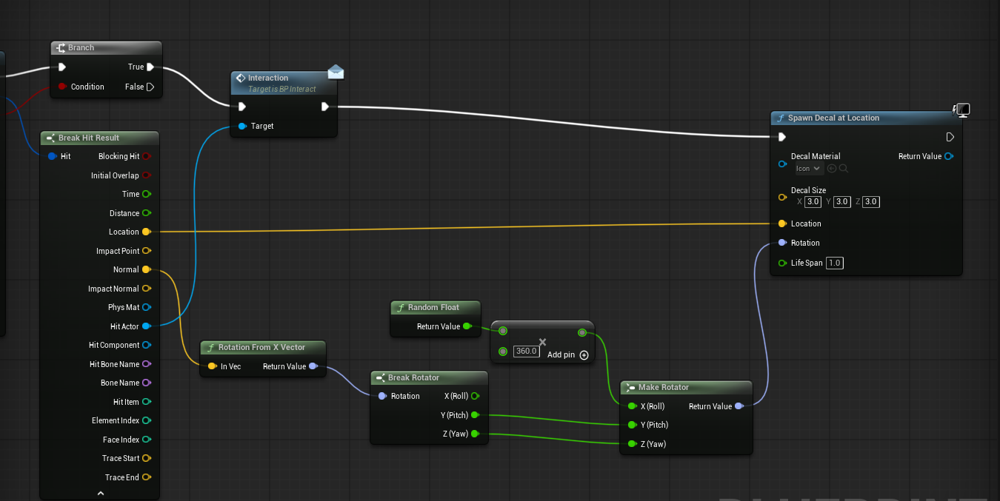
To ensure the user knows exactly where their pointer landed, I added a visual indicator.
- Spawning the Decal: Upon a successful hit, the script calls Spawn Decal at Location, plugging in the exact impact location from the hit result. It is set to disappear automatically after one second.
- Surface Alignment: To make sure the decal sits perfectly flat on whatever surface it hits, I take the Impact Normal and convert it to a rotation. I break that rotator and add a random float between 0 and 360 to the Roll axis before making a new rotator. This keeps the visual feedback dynamic and perfectly aligned to any angled surface every single time.
Phase 4: Cyclic Materials, Toggle Light, Dynamic Sun
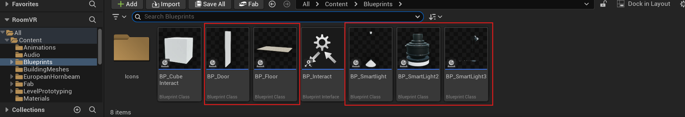
With the foundational movement and interaction rays established, it was time to turn the static architectural meshes into a reactive smart home. Because I set up the Blueprint Interface in the previous phase, wiring up these individual actors was incredibly clean and modular.
Phase 4.1: Smart Lighting Controls
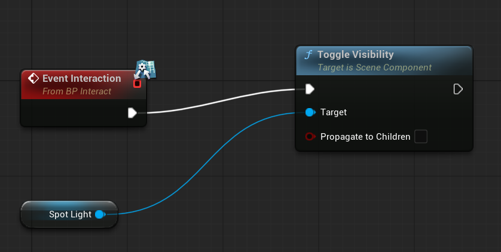
To make the lighting interactive, I converted the static FAB light fixtures into individual Blueprints.
- The Logic: Inside the smart light Blueprints, I called the Event Interact from the Blueprint Interface. When the raycast hits the fixture, this event triggers a Toggle Visibility node targeted at the Spotlight component.
- The Variations: As seen in the project files, I created multiple variants of these smart lights to handle different fixture types (ceiling fans, standing lamps, etc.), but because they all share the same interface, the player pawn doesn't need to know the difference between them. It just says "Interact," and the specific light handles the rest.
Phase 4.2: Cyclic Materials
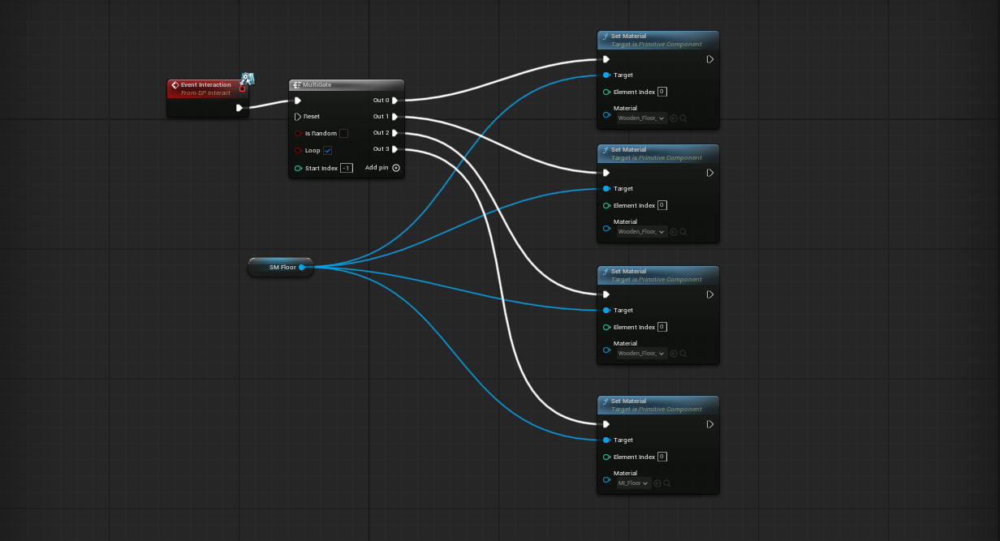
Allowing the user to customize the room in real-time was a major goal for this prototype. I wanted the user to be able to point at the floor or furniture and instantly swap the finishes.
- The Array: Inside the floor Blueprint, I created an array containing different material instances (like various wood grains and tile patterns).
- The Cycle: When the Floor receives the Interact message, it takes a current index integer, adds 1 to it, and sets the mesh to the new material. I then added a quick modulo math node to ensure that once the index reaches the end of the material list, it smoothly loops back to zero. The Couch material switching follows the same method.
Phase 4.3: The Dynamic Door
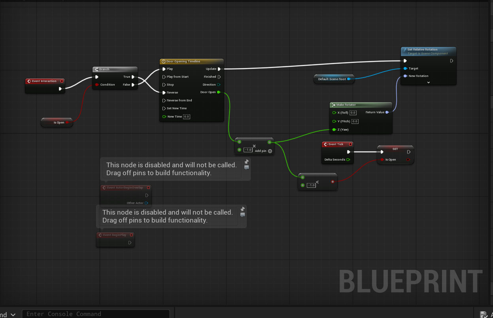
An architectural walkthrough isn't complete without working doors, but VR doors need to feel physical, not instantaneous.
- The Hinge: Inside the door Blueprint, I ensured the pivot point of the door mesh was set to the hinges, not the center of the frame.
- The Timeline: Upon receiving the Interact event, a Flip Flop node decides whether to open or close the door. This triggers a Timeline node containing a smooth curve. The timeline outputs a float value that drives a Set Relative Rotation node, allowing the door to swing open or shut gracefully over a defined duration rather than snapping instantly.
Phase 4.4: Thumbstick Time of Day
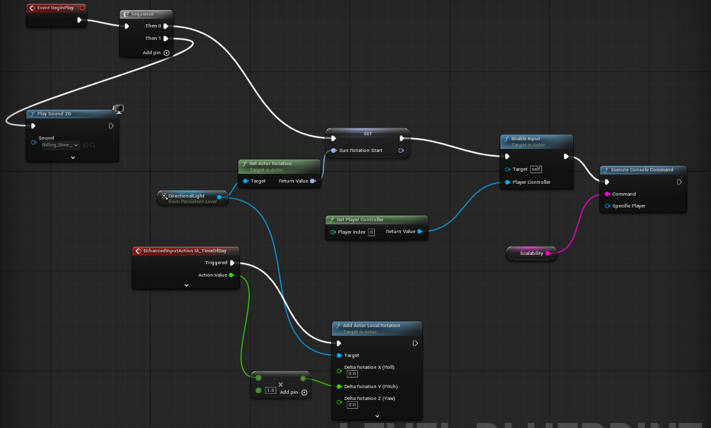
Finally, I wanted to give the user absolute control over the environment's mood by letting them manually control the sun.
- The Input: I mapped the right thumbstick's X-axis to a new Enhanced Input action.
- The Sun Rotation: Inside the player pawn, this input axis value is continually added to the Pitch of the level's primary Directional Light. By simply sliding their thumb left or right, the user can scrub through a full 24-hour day/night cycle, watching the dynamic shadows stretch across the room in real-time.
Conclusion and Looking Ahead
Building this VR architectural prototype has been an incredible exercise in balancing visual fidelity with strict performance constraints. By carefully scoping the project to a single interactive room, I was able to rapidly implement and refine core XR mechanics from the initial FAB asset integration and collision generation, to the modular Blueprint interactions and optimized PCVR locomotion. It serves exactly the purpose it was meant to: a highly polished vertical slice that proves the core concepts work flawlessly.
However, the journey for this project does not end here. The framework I have built needs to be taken further into the future and scaled beyond a single-room prototype. With my industry internship starting this September, I plan to leverage the technical foundations laid down in this project especially the modular Blueprint interfaces, dynamic lighting automation, and user-centric navigation and apply them to much larger, more complex immersive environments.
This living room was the perfect testing ground, but it is ultimately just the foundation. Now, it is time to take these systems and build something massive.